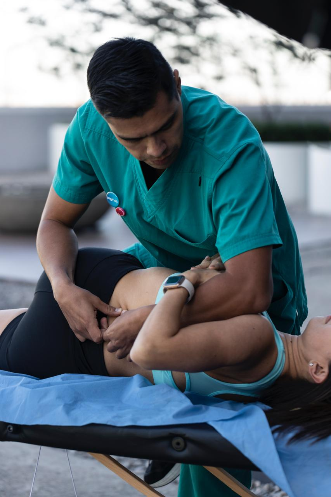

👨⚕️ Lic. en Fisioterapia
Luis Eduardo Vázquez Luviano
Licenciado en Fisioterapia con más de 13 años de experiencia clínica en rehabilitación ortopédica, neurológica y cardiopulmonar. Atención en consultorio (Fisiophix Médica Taxqueña) CDMX.

Experiencia
Trayectoria en hospitales y clínicas de alta especialidad, además de consulta privada y atención a domicilio.
Especialización
Neuromodulación del dolor, ecografía músculo-esquelética, rehabilitación cardiopulmonar, Redcord Neurac.
Forma de trabajo
Evaluación → Plan → Seguimiento.
Progreso visible.Enfoque de trabajo
Cada tratamiento inicia con una valoración integral para identificar el origen real del dolor o la limitación funcional, no solo el síntoma.
- ✔️ Valoración funcional y clínica completa
- ✔️ Terapia manual y técnicas avanzadas
- ✔️ Ejercicio terapéutico personalizado
- ✔️ Uso de tecnología clínica (ecografía, neuromodulación)
- ✔️ Seguimiento y medición de progreso
13+
Años de experiencia
100%
Planes personalizados
CDMX
Clínica